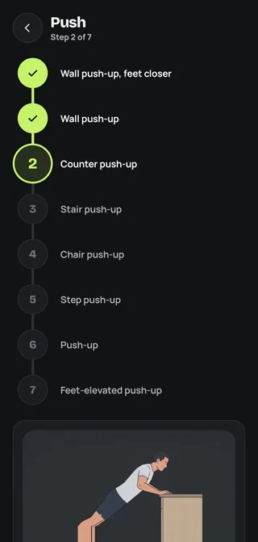

Paths
One small step at a time
Four paths: Push, Pull, Lower Body and Core. Each path is a ladder of small steps. On Push that means wall push-ups, counter push-ups, stair push-ups, then floor push-ups.
A few quick questions and your first session set your starting step.